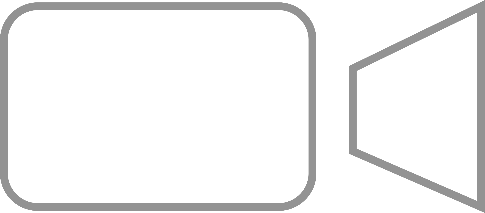

What I Do

Web design and development are the skills I'm most passionate about. Although it is still fairly new to me, I am constantly trying to learn and work on projects along the way.

I take shots of the city, nature, and anything interesting that can help us to see our world from a different vantage point.

Video was my first love and where I feel I have the most expertise. I film anywhere from weddings, personal stories, or simply the environtment around us.